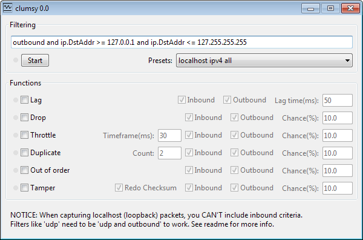

// todo(): Network issues simulation - How to test against bad network conditions
Suppose you have an application of any kind. It could be anything: your corporate website, streaming platform or mobile app, whatever. What any web-based application have in common is the way it interacts with the user, it all happens through the network. But if somebody would ask you to describe any kind of network in one sentence, I have a good candidate for this: “Network is unreliable“. It is not a consequence of some poor design while the network protocols were created, it is just life. No matter how hard you try, you can not just evade any possible problem that you might face. In the same sense, network failures are inevitable, there is nothing you can do with this fact. However, the thing that you can actually do is to prepare accordingly.
This particular article would be devoted to network failure simulation during the client-server communication. In the upcoming ones, I will also describe the techniques of bringing disturbance into a distributed software system, known as chaos engineering.
To tell the truth we tend to forget about poor network conditions which could lead to various quirks in your application’s behavior and the reason is simple. The internet connection in the office is blazingly fast for you, your QA department colleagues and your management. Maybe sometimes you are checking your application from home, where you also have a fiber connection but have you ever tested it from the basement of the building located on the outskirts of the city, in the middle of the forest or on the top of the mountain? Well, whether you like it or not, your users would use your application from such places. This problem gains more and more relevance as the users prefer their smartphones over desktops.
The first part of the article the types and the root causes of the network issues would be described in great detail, but if you are looking for practical guidance feel free to skip to the next section straight away, where a number of open-source software solutions for different platforms would be provided.
Network performance metrics
Even if you are already familiar with the terms that are used as network performance metrics, it still could be nice to revive and refresh your memory. Let’s cover the most significant terms one by one.
Latency
In the context of web applications latency is the amount of time needed for an IP packet to travel from the sender to recipient over the network. It could be measured as one-way trip time or back and forth, so-called round-trip time (RTT). We would use the term latency in the meaning of RTT. Simply speaking it is the time between the request of the user being sent and the response from the server being received. This metric is probably the most important because it affects the user experience of basically all kinds of applications.
First of all, what are the reasons for network latencies? Overall RTT latency is a combination of the delays from the various culprits:
- Distance - The signal travels through the wire with finite speed and that is the speed of light. If your server is in New York and the users are in Sydney the total distance between them would be around 16,000 km (10,000mi). Based on the speed of light value in a fiber cable (~200,000km/s) we can calculate the latency, which would be 160ms. Seems like the overall network latency between the cities is 280ms, that means the signal delay caused by the distance would be 57%.
- Processing - So the signal is transmitted with the speed of light, but most certainly along the way, it would be received and processed by the number of intermediate hardware, which includes routers, proxy servers and so on. The router could not transmit the IP packet as soon as it starts receiving it, it needs to receive the whole packet and verify the checksum. Although, modern hardware is really fast on processing if there is a big number of hops the signal is doing from one intermediate hardware to another that is all adds up.
- Traffic - Another important factor that is worth to mention is buffering. If your network channel is congested, let’s say it is using more 99% of its capacity, the packets would create a huge queue. Eventually, if the queue would not fit to the memory, some of the packets would be even dropped. In case of TCP, for example, the sender would have to send these packets again, that would increase latency a lot.
- DNS - If the domain name is used instead of the IP address, the DNS latency also comes to the play.
Server response - The last but not least your server response time.
Difference between latency, throughput and bandwidth
These three are often used interchangeably. Although they are indeed tightly coupled together, the meaning of each term is different.
Imagine a highway from the town A to the town B, on this highway:
- Latency is the time that is needed for the car to go the whole way in one direction and then go back.
- Bandwidth is the maximum number of cars that could go down the highway in a designated amount of time (e.g one second).
- Throughput is the actual number of cars that went the whole distance considering all the accidents and traffic jams.
In case of UDP the latency hardly affects throughput, but TCP needs to acknowledge the delivery of every packet sent and if it was not delivered successfully the rate of sending would be adjusted. So for TCP latency defines the throughput.
Packet loss
These could be the possible reasons for packet loss:
- Network congestion. As it was outlined earlier the main reason for the packet loss is insufficient bandwidth for the given connection. Imagine a waiter that is already carrying too much and we are asking him to also bring our order, there is a high chance that the waiter would drop something along the way. The same happens with a router when you send more data to it that it can transmit.
- Transmission failure. That is possible when ethernet cables are broken or some obstacle for the wireless transmission which shields the signal.
- Firmware bugs. This one is rare, but a router’s software is written by humans therefore not ideal, so it could happen.
Video, audio streaming applications and online games are the most sensible to packet losses
In order to determine packet loss, I recommend Wireshark, which is a free and open-source network protocol analyzer that is available on Windows, Mac and Linux.
Jitter
You may recall jitter as what happened to Fry from Futurama after he had 99 cups of coffee. In the context of networks, jitter means small variations of the latency between the delivery of the separate packets. It could be also caused by network congestion, but in some cases, it could be caused by the network collisions or signal interference.
As the packets are sent evenly they could arrive with different delays because of jitter. With a high value of jitter, they could even arrive with the wrong order or all at the same time, which could potentially lead to packet loss and increased latencies.
Reference values for optimal network performance
The following metric values are provided just as a reference to give you an idea of a good network performance. The ideal target values vary depending on the use case and the application specifics.
| Metric | Value |
|---|---|
| Latency (RTT) | < 100ms |
| Packet loss | < 1% during 15s interval |
| Jitter | < 20ms during 15s interval |
Tools to simulate network issues
For the sake of completeness, I would provide a list of tools for all of the most widely used platforms.
Chrome developer tools
First of all the most basic, but platform-independent solution: Chrome dev tools network throttling profiles.
You can select one of predefined network profile or create your own specifying the download bandwidth, upload bandwidth and latency. It definitely a good solution for a simple use-case, like checking the website load on a slow connection. However, it is like after building the dam down the river the amount of water is much less, but it is still a perfect and controlled flow. Also, it would only change the connection profile in Chrome, what if you want to test something from CLI?
MacOS and iOS - Network link conditioner
This is a native utility written by Apple, but unfortunately, it is not provided out-of-the-box. First I would explain how to install it on MacOS. You need to login to Downloads for Apple Developers website and download the “Additional Tools for Xcode” package. Download the latest version and execute the .dmg file. In the new window appearing on the screen go to the “Hardware” directory and double-click “Network Link Condition.prefPane”. Now as it is installed you can find it in “System preferences” or just using Spotlight search.
The utility would enable the selected network profile system-wide. There is a bunch of presets and of course a possibility to create your own. You can specify a download, upload and DNS latencies along with the package loss values.
Just don’t forget to disable it after the test!
No matter how good the browser emulates mobile it would be never exactly the same, so make sense to test it on a real device as well. Fortunately, there is a way to enable Network Link Conditioner on iPhone.
Although to do it you need to enable developer mode on iPhone and in order to do that you need a Mac with Xcode installed. If you have all these, just connect the device to Mac, open Xcode and navigate to Window > Organizer. You would see your device in the sidebar, click on “Use for Development” and thats it. Now when you would open Setting on iPhone new “Developer” section would appear on the bottom and you will find the Network Link Conditioner there.
Windows - clumsy
For Windows the most suitable for the job tool is clumsy. To tell the truth, I am not a Windows user, so there is not much I can say, but based on the description the possibilities are much richer than in Network Link Conditioner. Besides throttling the network and simulating packet losses the application provides a way to reorder, duplicate packets and tamper with the packet contents with a certain probability. Sounds neat!

Linux - tc & netem
The most low-level and feature-rich at the same time is Linux Network Emulator (netem). If you are using one of the most common Linux distributions(Fedora, OpenSuse, Gentoo, Debian, Mandriva, Ubuntu) you already have it enabled in the kernel. It comes along with another built-in utility Traffic Control(tc). There is no UI, just CLI, the way most of Linux users like it.
Obviously the sky is the limit in terms of functionality with this tool. I would provide some examples, just to give you a hint:1
tc qdisc add dev eth0 root netem delay 100ms
What happens here:
- tc qdisc - what Traffic control is doing under the hood is configuring the kernel packet scheduler.
- add - operation of appending new rule, after the test you probably would want to execute
deloperation. - dev eth0 - the device on which the rule would be applied.
- root - apply it on the egress (outbound traffic) qdisc
- netem - use the network emulator
- delay - network metric to be modified
- 100ms - value to be set on this metric
So overall this adds a delay of 100ms to outbound traffic.
This is how can you set it up to simulate 5 percent of packet loss, 2 percent of packet corruption and 1% of duplication:1
2
3tc qdisc add dev eth0 root netem loss 5%
tc qdisc change dev eth0 root netem corrupt 2%
tc qdisc change dev eth0 root netem duplicate 1%
Not enough? Here comes more:1
tc qdisc change dev eth0 root netem delay 10ms reorder 25%
With this rule, 25 percent of packets will get sent immediately, others will be delayed by 20ms.
And so on, I think you have got the idea. In the end if you want to delete these traffic shaping rules, just execute:1
tc qdisc del dev eth0 root
Check out the manual to get more information.
Android - microwave :)
It is surely possible to connect from Android device to the throttled Wi-Fi connection, e.g. served by an iPhone with Network Link Conditioner, but I don’t know about any native solutions for Android. Although the answer on Stackoverflow about using a microwave for that purpose looks promising(smile).
Summary
The most important thing I want to emphasize is the importance of such testing practices. The usage of the tools listed in this article would allow you to see your application from the perspective of your users, considering all the possible network conditions they might have.
When a browser downloads a resource (for example, HTML, JS, or an image) if a packet loss or a packet reorder happens through TCP-based connection, it would just trigger the resend of the packet. As you might guess, it would lead to increased latency, that’s it. However, for a different kind of applications, for example, video & audio streaming, on-line gaming, the packet loss could lead to the various kinds of artifacts.
In general, if your application is resilient to high latency values, packet losses and so on, it means it is rock-solid in the eyes of your users. So make sure that you ask yourself these questions: “How does network latency affect my application startup? How it would react on the 10% of packet loss?”.
That's all for today. Happy coding!